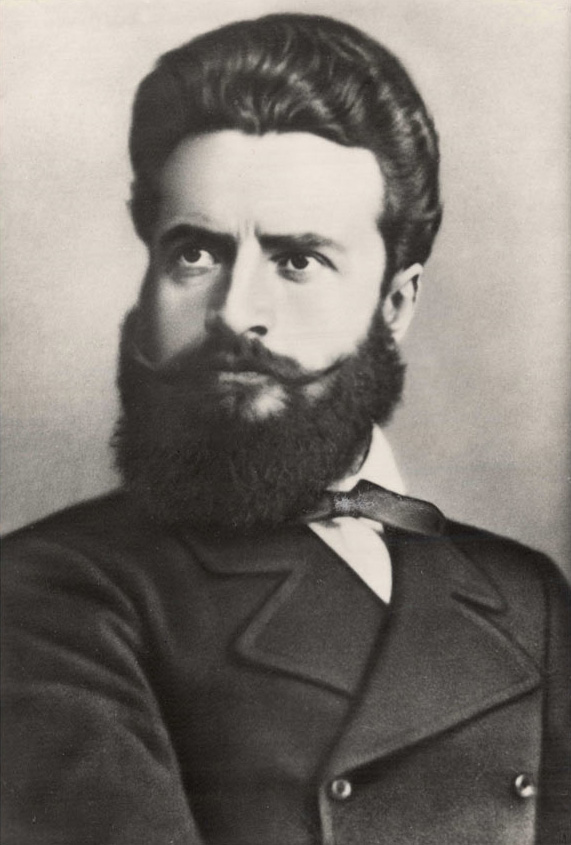
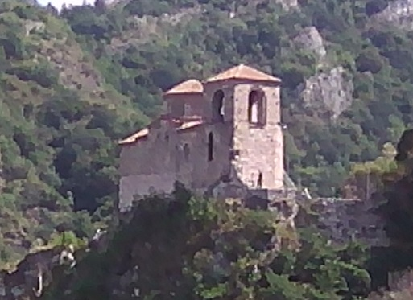
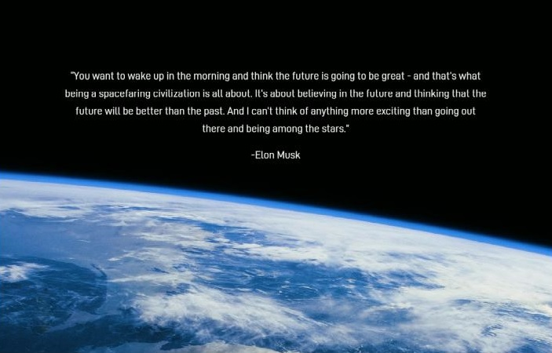
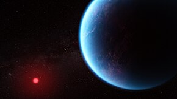
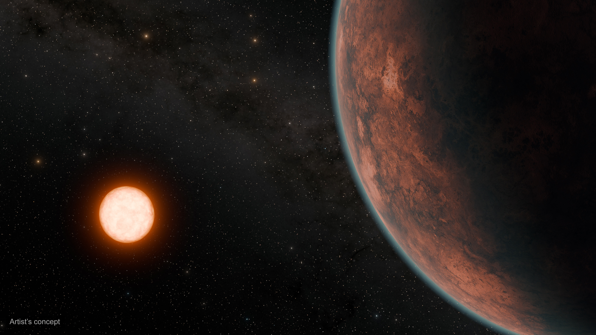

Blog: "Genius of modern Bulgaria"
Hristo Botev
"Hristo Botev (Bulgarian: Христо Ботев, pronounced [ˈxristo ˈbɔtɛf]), born Hristo Botyov Petkov (Христо Ботьов Петков; 6 January 1848 [O.S. 25 December 1847] – 1 June [O.S. 20 May] 1876), was a Bulgarian revolutionary and poet. Botev is considered by Bulgarians to be a symbolic historical figure and national hero. His poetry is a prime example of the literature of the Bulgarian National Revival, though he is considered to be ahead of his contemporaries in his political, philosophical, and aesthetic views."
Wikipedia

"I will make my hands into hammers, my skin into a drum, and my head into a bomb, and I will go out to fight the elements."
HADJI DIMITAR
Hristo Botev
He is alive, he is alive! There on the Balkans,
covered in blood, lies and groans
a hero with a deep wound on his chest,
a hero in youth and in the strength of a man.
On one side he threw a rifle,
on the other a saber broken in two;
his eyes darken, his head sways,
his mouth curses the whole universe!
The hero lies, and in the sky
the sun, stopped, angrily bakes;
a reaper sings somewhere in the field,
and the blood flows even more strongly!
It is harvest time now... Sing, slaves,
these sad songs! You too, sun,
in this slave land!
This hero will perish
too... But be silent, heart!
He who falls in battle for freedom,
he does not die: he is mourned
by earth and sky, beast and nature
and singers sing songs about him...
By day an eagle protects his shadow
and a wolf gently licks his wound;
above him a falcon, a heroic bird,
and it takes care of a brother, a hero!
Evening comes - the moon rises,
stars shower the vault of heaven;
the forest rustles, the wind blows, -
the Balkans sings a haidushka song!
And the wild beasts in white robes,
wonderful, beautiful, sing a song, -
quietly tread on the green grass
and come to the hero, and sit down.
One bandages his wound with herbs,
another sprinkles him with cold water,
a third kisses him quickly on the mouth, -
and he looks at her, - sweet, earthy!
"Tell me, sister, where is Karadzhata?
Where is my faithful companion?
Tell me, and take my soul, -
I want, sister, to die here!"
And they clap their hands, then embrace each other,
and with songs they fly into the skies, -
they fly and sing, until dawn,
and seek the spirit of Karadzhata...
But it is already dawn! And on the Balkan
the hero lies, his blood flows, -
the wolf licks his bitter wound,
and the sun is still shining - shining!
Asenovgrad

Hello from Asenovgrad!
Our town is famous with many churches, chapels and monasteries. It's worth to see how the faith has been saved!
Welcome!
Earth

“You want to wake up in the morning and think the future is going to be great - and that’s what being a spacefaring civilization is all about. It’s about believing in the future and thinking that the future will be better than the past. And I can’t think of anything more exciting than going out there and being among the stars.”
Elon Musk
K2-18b

“K2-18b, also known as EPIC 201912552 b, is an exoplanet orbiting the red dwarf K2-18, located 124 light-years (38 pc) away from Earth. The planet is a mini-neptune about 2.6 times the radius of Earth, with a 33-day orbit within the star's habitable zone. This means it receives about a similar amount of starlight as the Earth receives from the Sun. Initially discovered with the Kepler space telescope, it was later observed by the James Webb Space Telescope in order to study the planet's atmosphere.”
Wikipedia
Gliese 12

“Gliese 12 (GJ 12) is a red dwarf star located 39.7 light-years (12.2 parsecs) away in the constellation Pisces. It has about 24% the mass and 26% the radius of the Sun, and a temperature of about 3,296 K (3,023 °C; 5,473 °F). It is an inactive star and hosts one known exoplanet.”
Wikipedia